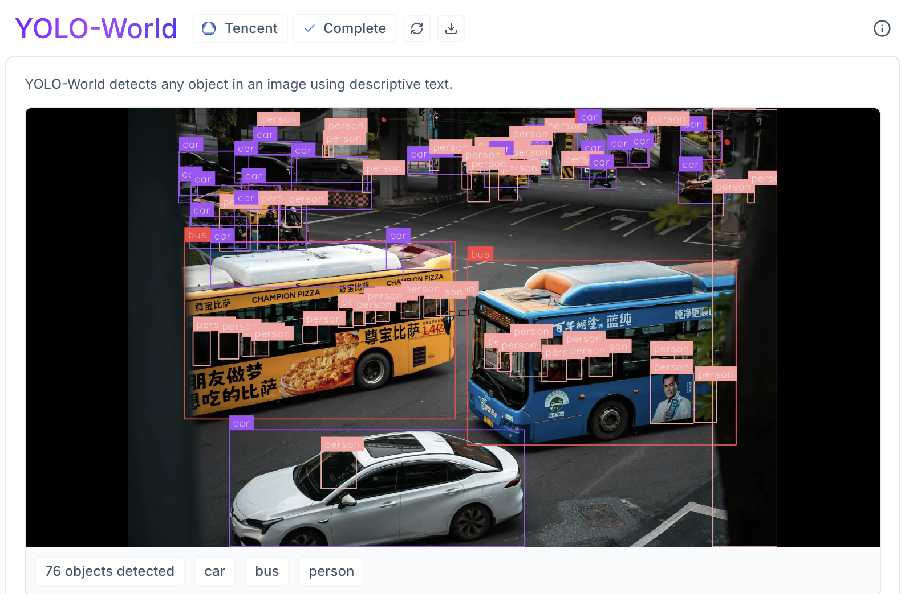
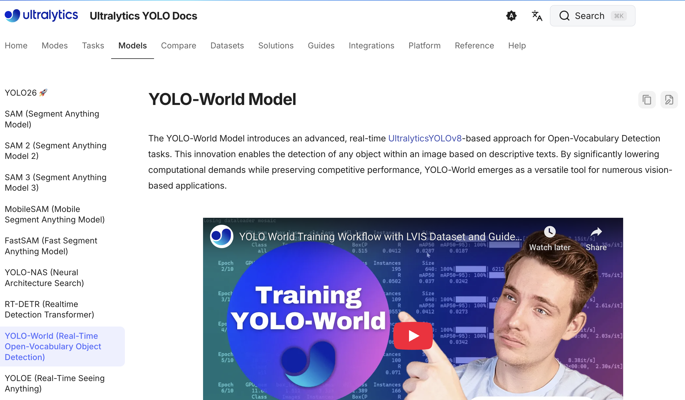
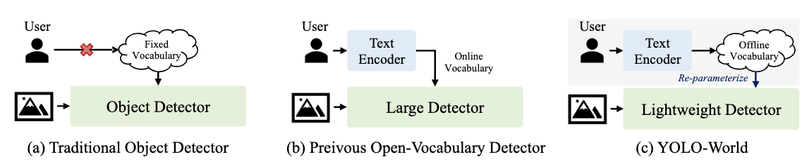
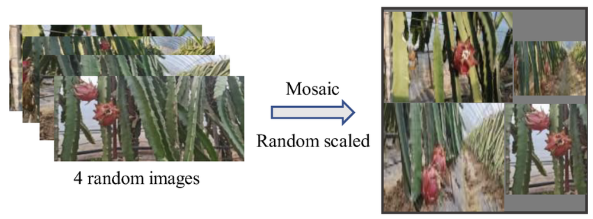
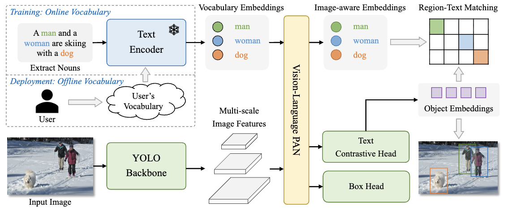
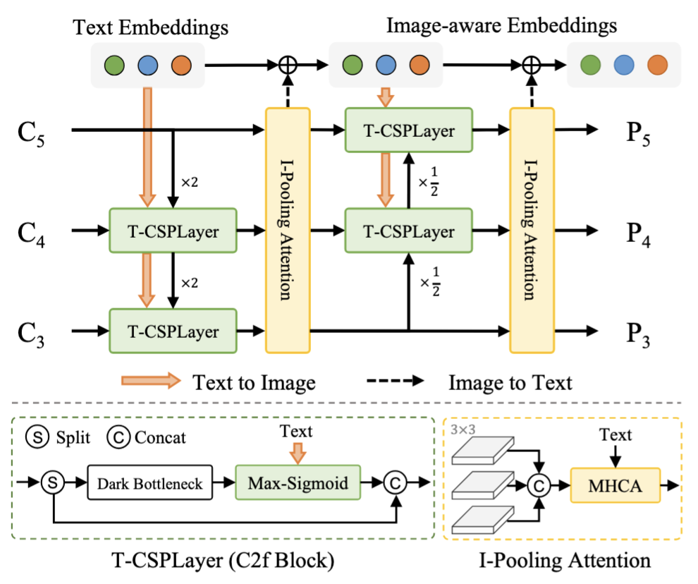
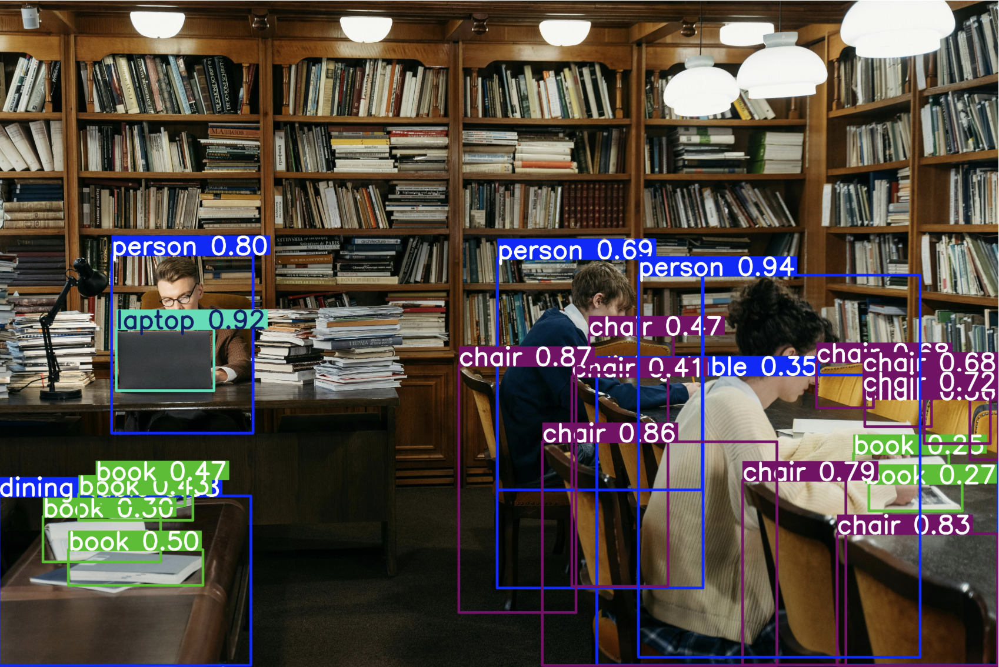
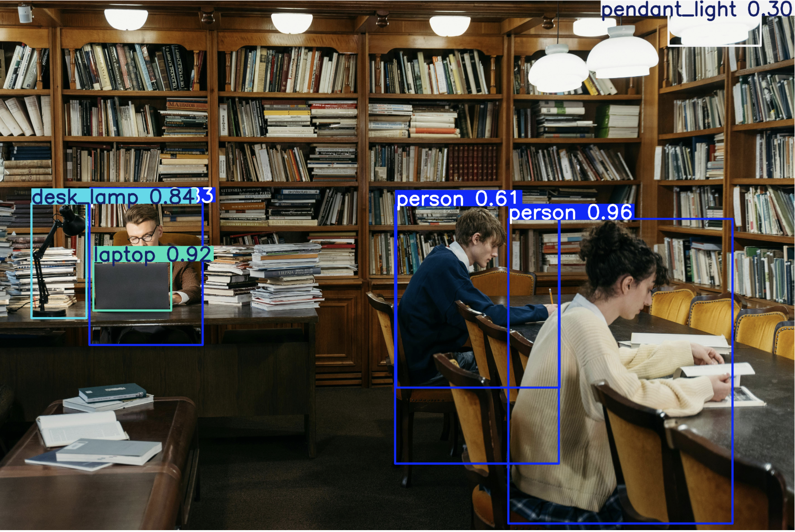
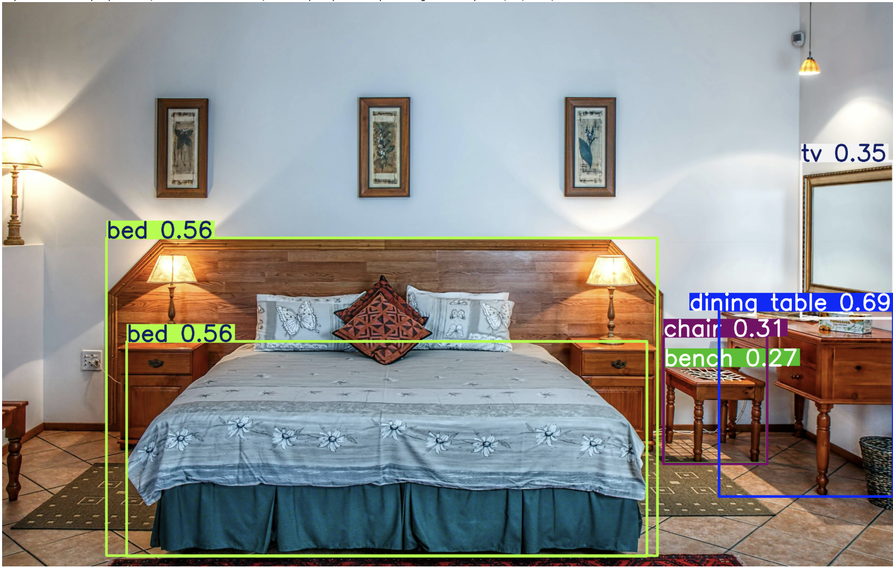
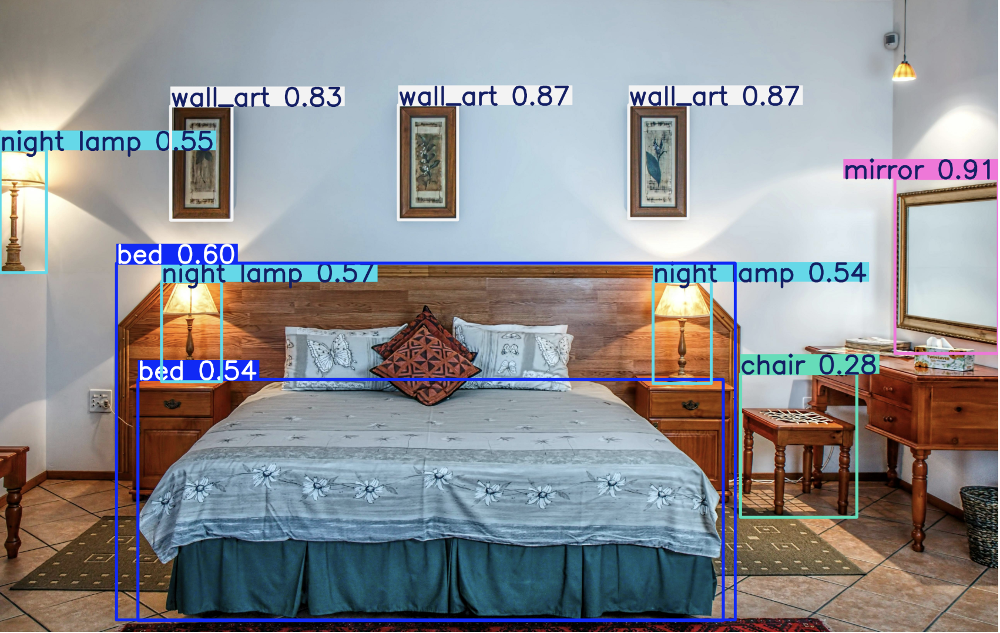

Overview of YOLO-World
Which problem is this solution addressing?
YOLO-World tackles the fundamental trade-off between speed and vocabulary in object detection. Traditional detectors are fast but limited to fixed categories, while existing open-vocabulary models are versatile but computationally heavy. YOLO-World bridges this gap, enabling real-time, zero-shot detection of arbitrary objects suitable for edge devices.
Real-Time Speed
Lightweight YOLO backbone keeps inference fast enough for edge devices and video streams.
Open Vocabulary
Detect arbitrary object categories using natural-language prompts — no retraining needed.
Zero-Shot Generalization
Strong performance on unseen classes via vision-language contrastive learning.
Developers & Potential Users
Developed by: researchers from Tencent AI Lab, ARC Lab (Tencent PCG), and Huazhong University of Science & Technology.
Potential users: developers and engineers in robotics and autonomous vehicles who need real-time image understanding on edge devices, with high speed and low computational cost.
Demo: Online detection via Roboflow (prompt-then-detect). Source on GitHub; models & guides on Ultralytics.


A Brief Development History
Traditional Object Detection
Detectors trained on closed-set datasets with fixed categories — COCO's 80 classes, Objects365's 365 classes. Methods: Faster R-CNN (region-based), one-stage detectors (pixel-based), DETR (query-based), YOLOv8 (speed+accuracy). Limited to trained categories
Open-Vocabulary Detection (Heavy)
Vision-language pre-training to match image regions with text. Unifies detection and grounding data. GLIP (grounded pre-training), Grounding DINO (cross-modality fusion), OWL-ViT, ViLD, F-VLM. Slow—heavy Swin/Transformer backbones
YOLO-based Open-Vocabulary
Brings open-vocabulary capabilities to the efficient YOLO architecture. ZSD-YOLO aligned YOLO with language models but had limited generalization. YOLO-World overcomes these with RepVL-PAN and contrastive matching. Fast + Flexible

| Phase | Key Characteristics | Representative Methods | Limitations |
|---|---|---|---|
| Traditional | Closed-set, fixed vocabulary training on COCO (80) / Objects365 (365) | Faster R-CNN, one-stage, DETR, YOLOv8 | Cannot handle novel objects or open scenarios |
| Heavy OVD | Vision-language pre-training; unifies detection + grounding data | GLIP, Grounding DINO, OWL-ViT, F-VLM | High compute cost; slow inference due to heavy backbones |
| YOLO-OVD | Open-vocabulary on efficient YOLO backbone via prompt-then-detect | ZSD-YOLO, YOLO-World | Early attempts had limited generalization; YOLO-World resolves this |
Key Features of the Solution
Online Vocabulary Training & Offline Vocabulary Inference
Training with Online Vocabulary
During training, the system builds a temporary vocabulary using a group of four images (mosaic sample). This list includes correct nouns from the images plus random incorrect nouns — up to 80 words by default — helping the model learn via contrastive discrimination.
Inference with Offline Vocabulary (Prompt-then-Detect)
At inference time, the system uses a pre-set offline vocabulary to save processing time. Users define their own categories, which are encoded once into numerical embeddings and cached — avoiding real-time text processing on every frame.

Vision-Language Interaction via RepVL-PAN
The core innovation: Re-parameterizable Vision-Language Path Aggregation Network (RepVL-PAN). It connects visual features from the image with word embeddings from the text encoder via a bi-directional mechanism:
Text-guided CSPLayer (Text → Image)
Uses Max-Sigmoid Attention to inject text semantics into image features, highlighting relevant visual regions.
Image-Pooling Attention (Image → Text)
Aggregates image features via max pooling to update text embeddings, creating image-aware embeddings.
Region-Text Contrastive Matching
Instead of classifying into fixed buckets, YOLO-World recognizes objects by comparing their visual signature against text signatures using cosine similarity:
where \(e_k\) is the predicted object embedding for region \(k\), \(w_j\) is the text embedding for category \(j\), and \(\alpha, \beta\) are learnable scale and bias parameters.
Region-Text Contrastive Loss: A cross-entropy loss applied to these similarity scores trains the model to maximize similarity for matched pairs and minimize it for unmatched pairs — similar in spirit to CLIP's training objective.
Automated Data Labeling (Auto-Labeling Pipeline)
To recognize patterns outside standard datasets (e.g., beyond COCO), the authors devised a pipeline to generate training data from massive, noisy image-text pairs:
Efficient Inference via Re-parameterization
Enables real-time detection of custom user-defined objects without retraining. The offline vocabulary embeddings are reshaped and baked into the weights of 1×1 Convolutional Layers. This mathematically transforms the semantic comparison operation into a standard, fast matrix multiplication typical of CNNs — removing all text encoder overhead at inference time.
This re-parameterization step is what makes YOLO-World competitive in latency with purely visual detectors, despite supporting open-vocabulary queries.
Pros, Cons & Potential
Pros
- Real-time efficiency via prompt-then-detect & offline inference
- Strong zero-shot performance on unseen classes
- Scalable data pipeline via pseudo-labeling on noisy data
- Flexible RepVL-PAN for multi-scale detection
Cons
- Pseudo-label quality caps accuracy (depends on GLIP teacher)
- Frozen CLIP encoder prevents learning linguistic nuances
- Pre-defined vocabulary trade-off: arbitrary detection needs slower online mode
Potential
- Robotics & Edge AI: lightweight design, high frame rates
- Real-time video: outperforms Transformers for streaming tasks
- Foundation model distillation: template for segmentation, etc.
- Democratized detection: accessible via natural-language prompts
Two Solutions with Similar Functionalities
GLIP — Grounded Language-Image Pre-Training
GLIP (CVPR 2022) reformulates detection as phrase grounding by aligning visual regions with massive image-text pairs, creating strong zero-shot capabilities.
However, it relies on heavy backbones (Swin Transformers) and processes image and text simultaneously at every inference, causing high computational cost.
In YOLO-World, GLIP serves as a precise but slow teacher to generate pseudo-labels during the auto-labeling pipeline.
Grounding DINO
Grounding DINO merges DINO (Transformer) with GLIP's pre-training, employing extensive cross-modality fusion for state-of-the-art open-set accuracy.
Despite top accuracy, it suffers from slow inference due to online text processing at every forward pass — unlike YOLO-World's decoupled prompt-then-detect strategy with cached vocabulary.
| Model | Backbone | Text Processing | Speed | Zero-Shot |
|---|---|---|---|---|
| GLIP | Swin-L | Online (per-image) | Slow | Strong |
| Grounding DINO | Swin-L + DINO | Online (per-image) | Slow | SOTA |
| YOLO-World | YOLOv8 (Darknet) | Offline (cached once) | Real-time | Competitive |
Appendix
A1 — Comparison Among Detection Methods
- Part a — Traditional Object Detector: Relies on a fixed vocabulary; can only identify categories seen during training (e.g., COCO's 80 classes). Lacks flexibility for novel objects in open environments.
- Part b — Previous Open-Vocabulary Detectors: Designed for novel objects but use large, heavy models. Simultaneous image+text processing on every input is time-consuming and hinders practical deployment.
- Part c — YOLO-World: Lightweight YOLO + prompt-then-detect strategy. Users define prompts encoded into an offline vocabulary via Text Encoder, re-parameterized into model weights. Enables rapid open-vocabulary detection without repetitive text encoding during inference.
A2 — Architecture Deep-Dive
The system consists of three primary stages: Feature Extraction, Vision-Language Fusion, and Contrastive Detection.

Feature Extraction
- Vision Stream: YOLOv8-based Darknet backbone processes image \(I\) → multi-scale pyramids \(\{C_3, C_4, C_5\}\).
- Language Stream (Train): N-gram extracts noun phrases → encoded by pre-trained CLIP Transformer → embeddings \(W = \texttt{TextEncoder}(T)\).
- Language Stream (Infer): Custom vocabulary encoded once → offline matrix cached; no real-time text processing.
Vision-Language Fusion (RepVL-PAN)

- Text→Image: Max-Sigmoid Attention in Text-guided CSPLayer highlights text-relevant image regions.
- Image→Text: Image-Pooling Attention aggregates image features via max pooling to update text embeddings into image-aware embeddings.
Detection & Contrastive Matching
- Bounding Box Regression: 3×3 convolutions predict boxes \(\{b_k\}\).
- Text Contrastive Head: 3×3 convolutions produce object embedding \(e_k\), matched against image-aware text embeddings \(w_j\) via:
Inference Optimization (Re-parameterization)
The offline vocabulary matrix is re-parameterized into 1×1 convolutional weights, transforming vision-language interaction into standard convolutions — eliminating text encoder overhead entirely during deployment.
A3 — Detection Demo Results
Tested using my own Kaggle Notebook with models from Ultralytics.
Library Scene (Pexels)


Without prompts the model auto-detects many common objects but may miss specific items. With custom prompts the results are cleaner and more targeted — but unlisted objects will be ignored.
Bedroom Scene (Pexels)


Without prompts the model misdetects some objects (e.g., lamp, art). Custom prompts guide the model to detect the targeted objects correctly.
Key Takeaway: Prompting trades off generality for precision. Without prompts, YOLO-World behaves like a standard detector. With prompts, it becomes a targeted, efficient open-vocabulary detector.